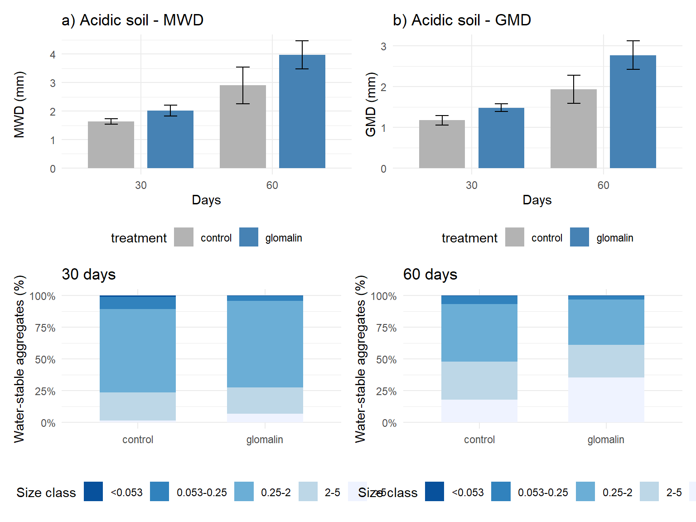

# MWD
mwd_control_30 <- c(1.73339306, 1.53433739, 1.634196588)
mwd_glomalin_30 <- c(2.23699284, 1.895868616, 1.928452711)
mwd_control_60 <- c(2.203064335, 3.02770913, 3.475316139)
mwd_glomalin_60 <- c(4.294539606, 4.205580707, 3.401697855)
df_mwd <- data.frame(
time = rep(c(30,60), each=6),
treatment = rep(rep(c("control","glomalin"), each=3), 2),
rep = rep(1:3, 4),
MWD = c(mwd_control_30, mwd_glomalin_30, mwd_control_60, mwd_glomalin_60)
)
# GMD
gmd_control_30 <- c(1.09151922, 1.125182351, 1.306665311)
gmd_glomalin_30 <- c(1.593796313, 1.419741338, 1.434993595)
gmd_control_60 <- c(1.553781491, 2.024858534, 2.235009953)
gmd_glomalin_60 <- c(3.000059714, 2.950202638, 2.369728501)
df_gmd <- data.frame(
time = rep(c(30,60), each=6),
treatment = rep(rep(c("control","glomalin"), each=3), 2),
rep = rep(1:3, 4),
GMD = c(gmd_control_30, gmd_glomalin_30, gmd_control_60, gmd_glomalin_60)
)
# Percentage of aggregates (order: <0.053, 0.053-0.25, 0.25-2, 2-5, >5)
parse_pct <- function(x, time, treat) {
size <- c("<0.053","0.053-0.25","0.25-2","2-5",">5")
do.call(rbind, lapply(1:5, function(i) {
data.frame(time=time, treatment=treat, size_class=size[i],
rep=1:3, percentage=x[(i-1)*3+1:3])
}))
}
pct_control_30 <- c(2.151,0.881,0.447, 15.58,8.938,4.752, 50.974,73.185,72.096, 30.276,14.436,22.177, 1.0146,2.5598,0.528)
pct_glomalin_30 <- c(0.082,0.535,0.408, 4.296,3.418,4.199, 63.748,71.582,68.854, 21.931,18.74,21.076, 9.9427,5.7249,5.4627)
pct_control_60 <- c(0.389,0.467,0.514, 6.002,6.752,6.293, 58.377,39.363,38.784, 27.634,35.796,26.284, 7.5993,17.622,28.125)
pct_glomalin_60 <- c(0.419,0.043,0.378, 2.976,2.896,2.775, 31.266,33.859,41.884, 24.057,22.998,29.899, 41.282,40.204,25.063)
df_pct <- rbind(
parse_pct(pct_control_30, 30, "control"),
parse_pct(pct_glomalin_30, 30, "glomalin"),
parse_pct(pct_control_60, 60, "control"),
parse_pct(pct_glomalin_60, 60, "glomalin")
)
df_pct$size_class <- factor(df_pct$size_class, levels=c("<0.053","0.053-0.25","0.25-2","2-5",">5"))Reproduce Fig2 (acidic soil)
df_mwd_sum <- df_mwd %>% group_by(time, treatment) %>% summarise(mean=mean(MWD), sd=sd(MWD), .groups="drop")
df_gmd_sum <- df_gmd %>% group_by(time, treatment) %>% summarise(mean=mean(GMD), sd=sd(GMD), .groups="drop")
df_pct_sum <- df_pct %>% group_by(time, treatment, size_class) %>% summarise(mean=mean(percentage), sd=sd(percentage), .groups="drop")# MWD plot
p1 <- ggplot(df_mwd_sum, aes(x=factor(time), y=mean, fill=treatment)) +
geom_col(position=position_dodge(0.9), width=0.7) +
geom_errorbar(aes(ymin=mean-sd, ymax=mean+sd), width=0.2, position=position_dodge(0.9)) +
labs(x="Days", y="MWD (mm)", title="a) Acidic soil - MWD") +
scale_fill_manual(values=c("control"="gray70","glomalin"="steelblue")) +
theme_minimal() + theme(legend.position="bottom")
# GMD plot
p2 <- ggplot(df_gmd_sum, aes(x=factor(time), y=mean, fill=treatment)) +
geom_col(position=position_dodge(0.9), width=0.7) +
geom_errorbar(aes(ymin=mean-sd, ymax=mean+sd), width=0.2, position=position_dodge(0.9)) +
labs(x="Days", y="GMD (mm)", title="b) Acidic soil - GMD") +
scale_fill_manual(values=c("control"="gray70","glomalin"="steelblue")) +
theme_minimal() + theme(legend.position="bottom")
# WSA stacked bar (30 and 60 days)
p30 <- df_pct_sum %>% filter(time==30) %>%
ggplot(aes(x=treatment, y=mean, fill=size_class)) +
geom_col(position="fill", width=0.6) +
scale_y_continuous(labels=scales::percent_format()) +
labs(x="", y="Water-stable aggregates (%)", title="30 days", fill="Size class") +
scale_fill_brewer(palette="Blues", direction=-1) + theme_minimal()
p60 <- df_pct_sum %>% filter(time==60) %>%
ggplot(aes(x=treatment, y=mean, fill=size_class)) +
geom_col(position="fill", width=0.6) +
scale_y_continuous(labels=scales::percent_format()) +
labs(x="", y="Water-stable aggregates (%)", title="60 days", fill="Size class") +
scale_fill_brewer(palette="Blues", direction=-1) + theme_minimal()
p3 <- p30 + p60 + plot_annotation(title="c) Acidic soil - WSA distribution") &
theme(legend.position="bottom")
# Combine all three
(p1 | p2) / p3
Results
The plots successfully reproduce Fig.2a-c from the paper.